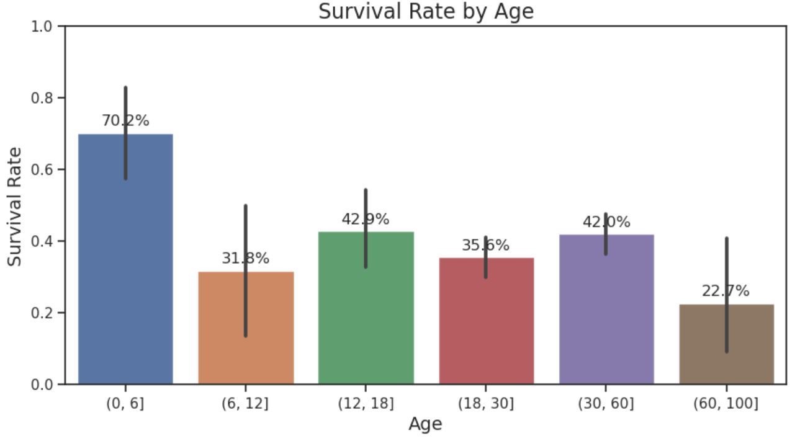

def get_age_group(age):
"""
Bins the age column into different age groups
"""
if age < 18:
return 'Child'
elif age < 65:
return 'Adult'
else:
return 'Senior'Reworking Lesson 5, I returned to the Titanic Competition to learn more Fast.AI-concepts. Additionally, I explored how ChatGPT could increase my productivity.
As a result I created the following 2 notebooks
- Titanic EDA and 1R with ChatGPT (GitHub/Kaggle): The goal of this notebook is to create a 1R-model (One Rule, also see related paper) of the Titanic Kaggle Competition after doing EDA (Exploratory data analysis), supported by ChatGPT.
- Titanic Feature Engineering and Model Creation with ChatGPT (GitHub/Kaggle): The goal of this notebook is do some feature engineering on the dataset of the Titanic Kaggle Competition and to later create a Fast.AI-
learnerto submit the result to Kaggle, supported by ChatGPT.
In this blog post, I do not was to talk about the Titanic Competition too much, but rather about the co-working experience with ChatGPT and what I learned about how to interact with it. (Prompts will be indicated by the chat emoji 💬).
The main findings are that you need to be precise in your prompting, but there is a limit to what you can prompt for. When it comes to interpreting the result, you need to guide the conversation with ChatGPT. While it can save a lot of time, it cannot do all the work for you.
The hottest new programming language is English
As Andrej Karpathy tweeted: “The hottest new programming language is English”. Indeed, especially in the EDA-notebook (GitHub/Kaggle), I actually used English as a programming language, and ChatGPT was merely translating to python. Additionally, working with ChatGPT really felt like a conversation: I asked for some visualizations, ChatGPT created the code, I ran the code, and based on the result, I created the next prompt, either asking ChatGPT to fix an error, or to build a new visualization.
Somehow this felt like “real life” (whatever that is 😉), in which I am a software consultant: A typical workflow in that business is writing a specification document, giving it to a developer who writes the code, and getting the result after some time. With ChatGPT, however, the iteration cycles are 1 to 2 orders of magnitude faster (quasi instant), and iteration speed is essential. Even a super-skilled human developer would be considerably slower, because ChatGPT is just “typing so much faster”. Without being overly enthusiastic, not all tasks are equally well-suited for this workflow with ChatGPT (as of today). The more complex the task are, the more “random” the result will get. With EDA (GitHub/Kaggle), this interaction felt productive. For feature engineering (GitHub/Kaggle), I had to break down the task for ChatGPT into smaller chunks, and for model creation and fine tuning it, I took over in the end.
The key to getting good results are well-stated prompts. It is really important to be explicit in your prompts: State what you really want, ChatGPT is not really great at reading between the lines, or extrapolating what might be inferred. As you go through the notebooks, you will see me make that mistake. But than again, by talking to ChatGPT, you can refine the prompts along the way. Or you can simply build upon the results. If ChatGPT produced a function/visualization you do not like, you can simply ask for a new version.
But why are some coding tasks more difficult than others? The big limitation of ChatGPT is that it can neither run/debug the code or see the result the code produces, also it does not know the real data. All it can do is read the code and respond (with variations). Therefore, it is understandable that it makes mistakes or produces code which is syntactically incorrect. The best feature from ChatGPT on the other side is that you can talk though the bugs and resolve them quickly (“💬: There is an error: AssertionError: nan values in Fare but not in setup training set - can you please correct the code.”). This works surprisingly well, especially when it is related to the syntax of the code. Tweaking the output of working code, however, is a bigger challenge for ChatGPT because it can neither run/debug the code, read the data, or see the result the code produces. As you can see, you need to remain the driver of the conversion. But done correctly, ChatGPT can be a great “productivity buddy” where ChatGPT can to 80-90% of the work (i.e. write the code), and you take the role of the instructor / interpreter / reviewer.
You need to be the Eyes and Ears of ChatGPT
For some tasks, however well prompted, ChatGPT struggles to produce great results when it needs the context of the real data, or if it should build on results the code it generated revealed. This is looping back to the same limitations I mentioned before. Let me illustrate what I mean via an example: In feature engineering, ChatGPT had no trouble writing a function to create new feature “Age Group” (“💬: Create a python functions to create the feature”Age Group”“). This prompt would create the following function (in the context of a discussion of the Titanic dataset):
At first glance, this is reasonable, but it does not take into account, the specific content of our dataset. You could argue that the prompt was not very specific (which was intentional). The point I am trying to make is that ChatGPT creates bins which are logical, but they are not connected to the Titanic dataset. This is the case even though in EDA (GitHub/Kaggle), jointly with ChatGPT, I created the following chart which illustrates the relation between age and chance of survival:

We can see that small children had a much higher chance of survival (because they probably received the most help and preferential treatment) than any other age group, and people above the age of 60 had a significant lower chance of survival.
ChatGPT cannot see this result even though it generated the code to create the visualization. Again, this is because it can neither run the code nor can it inspect the resulting graph, this remains a human task. But for the refinement, ChatGPT can assist:
💬: Rewrite the get_age_group function to generate the following bins [0, 6, 12, 18, 30, 60, 100], name the bins appropriately
Here is the resulting code:
def get_age_group(age):
"""
Returns the age group based on the given age.
"""
if pd.isnull(age):
return 'Unknown'
elif age <= 6:
return 'Infant'
elif age <= 12:
return 'Child'
elif age <= 18:
return 'Teenager'
elif age <= 30:
return 'Young Adult'
elif age <= 60:
return 'Adult'
else:
return 'Senior'My notebooks contain more examples, but what we can take away is that you need to be the eyes and ears of ChatGPT. ChatGPT is great at generating a lot of code, but you need to interpret the results and guide the way from prompt to prompt. So far, ChatGPT cannot do this. AI cannot take over - yet.